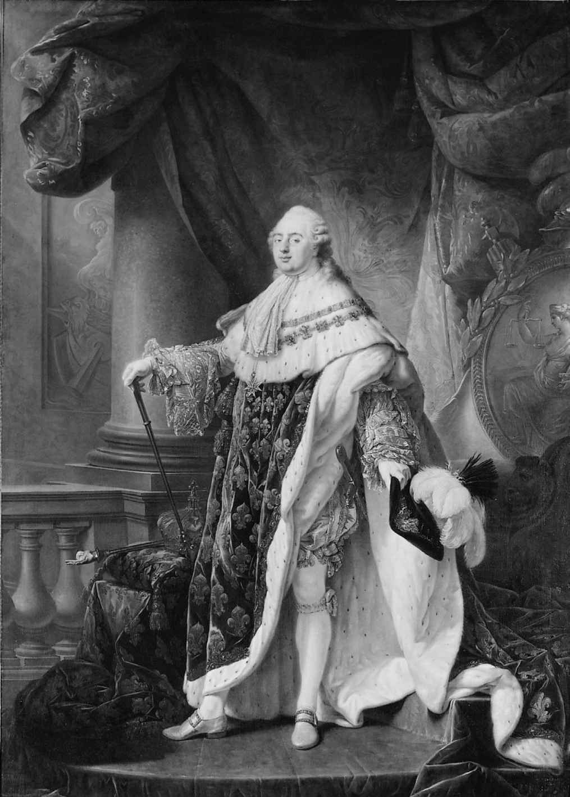

就一个此前已有各种篇幅的著述的课题写一本小书，其挑战性要比乍看起来更大。我们会想起一些以不同的形式数次“撰写雷同作品”的人士，但我们都不想成为这样的人。所以我的出发点不是复述一个为人熟知的故事，尽管任何自称导论 [1] 的文字某种程度上都免不了这样做。我想讨论的主要是法国大革命意义何在，为何其影响力在发生后的两个世纪中以多种方式持续存在。法国大革命的整个故事，无论是作为18世纪末的一系列事件，还是作为后世脑海中的一整套观念、形象和记忆，都在强有力地证明历史的重要性，并且堪称历史复杂性的显著范例。对于理解19世纪和20世纪，它是个重要参照，对于21世纪是否仍然如此，也许正如一位中国智者所言，言之尚早。
我最初认真地研习法国大革命，是在本科高年级的时候。这得益于诺曼·汉普森的神来之作《法国大革命社会史》的启发。该书的作者如今已年逾八旬，但它仍在重印，这一点我并不意外。后来，我有幸在约克大学成为诺曼的同事。谨以此书纪念我们多年的友谊，并致谢忱。尽管它比诺曼的任何一部作品都更纤薄，但愿他不致认为个中情谊与丰厚的生日礼物相比有丝毫之折扣。 [2]
威廉·多伊尔于巴斯
2001年4月8日

图1 路易十六：踌躇满志的绝对君主